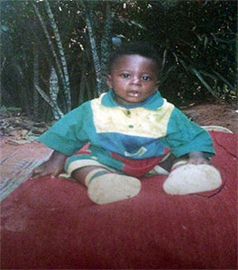
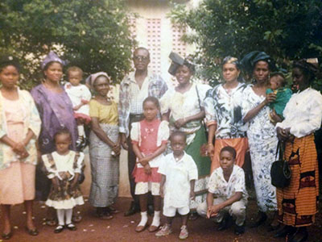
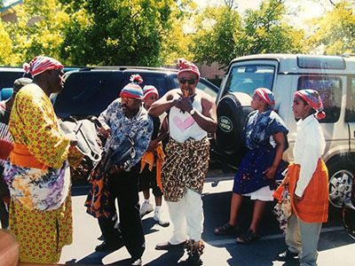
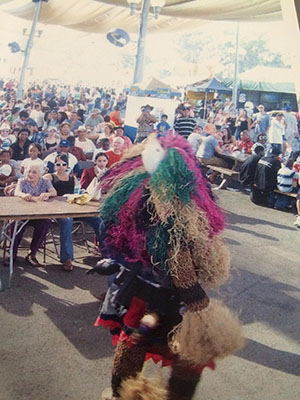

 Born Jude(J) Chukuemeka(C) Igwe Aka (JC-AKA), to a struggling family in Iva Valley, Enugu Nigeria. I immigrated to Sacramento, CA at the age of 9. My upbringing shapes my music; cliché, I know, but it’s true. Growing up in one of the most impoverished parts of Nigeria in Iva Valley, moving multiple times to stay with various family members due to different family issues/concerns, and the cultural/physiological shock of relocating to a quiet suburb in Sacramento all influenced my interest in music.
 Nigerian music was one of the more pleasant parts of life in Nigeria. It made me laugh, dance, feel, and gave me strength. I was exposed to a multitude of African music: the Igbo Ogene Music, West African Highlife, Gyration, the various African trends, such as Awilo and Brenda Fassie, which would hit cassette decks across the continent, can still be heard on my speakers on a consistent basis. And then there is Reggae music: the genre that I play from time to time. Like many African men, my father loved Reggae and exposed us to more than just the Marley greatest hits. Gregory Isaacs and other Roots, Rock, Reggae, kings were a staple in our household. The newer generation that combined Reggae with Hip-Hop such as Shabba Ranks and Damian “Jr. Gong” Marley, I discovered on my own and have incorporated into my musical style.
 With time I went from being a consumer of music to an active participant. I was held back from school so that I could  master the English language. I used the time to start playing with the language and began writing poetry. At the same time my dad formed an African music group encompassing me and my brothers, which performed live on many stages including the California State Fair. Around the same time, I joined the school choir. But living in California, Hip-Hop won my heart as I became exposed to it. As I grew older I endeavored in many activities and explored potential for various careers, but nothing gives me the same satisfaction as music, thus I have chosen to make it my life.